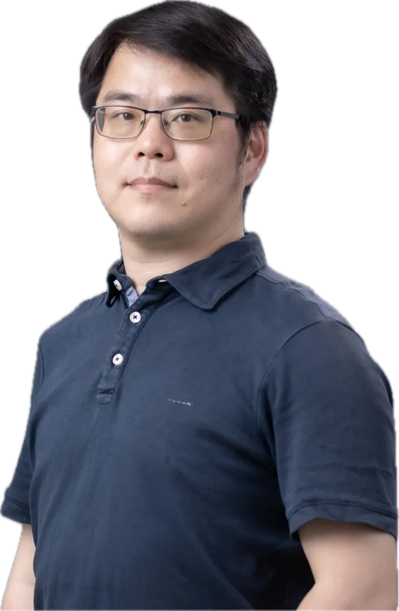

致力於推動以人為本的設計研究與跨域創新實踐,結合設計思考、服務設計與 AI 協作,協助學校、企業、醫療照護機構與非營利組織,從使用者洞察出發,重新定義問題,發展可行的創新方案。
研究主題聚焦於同理心設計、高齡照護、失智友善、青銀共創與服務體驗設計,相關成果發表於 SSCI/SCI 期刊與 HCII、AHFE 等國際會議,並長期主持國科會、教育部與產學合作計畫。近五年累計辦理演講與工作坊超過 300 場,持續將設計研究轉化為教學創新、產業培訓與社會實踐的具體成果。

發展 MAP-CJM 顧客旅程分析框架,結合 AEIOU、POEMS、KA 法等田野觀察方法,應用於健康照護、地方創生與品牌服務創新。
比較 360 度影片與沉浸式 VR 對設計師同理心之誘發效果,建構高齡者與失智者同理心設計工具,支持青銀共創。
面向不同學科背景學習者的設計思考課程建構、教師增能與教學實踐研究;近年聚焦 AI 協作教學、問題重構(母問題診斷)與數位工作坊工具開發。
肌肉骨骼傷害評估、知覺費力量表、輔具與行動健康(mHealth)介面設計,並延伸至 AI 姿態估計之人因評估應用。